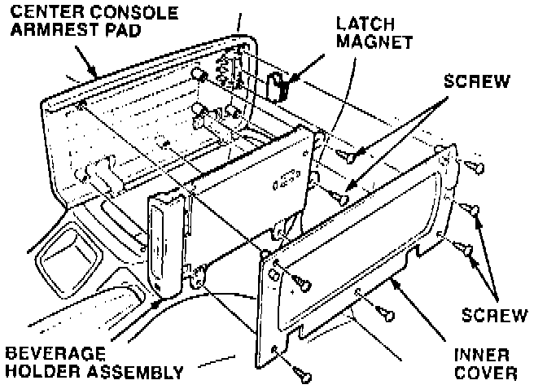
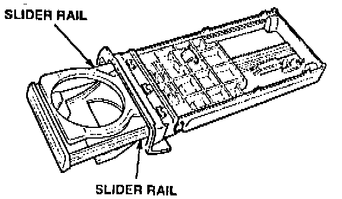
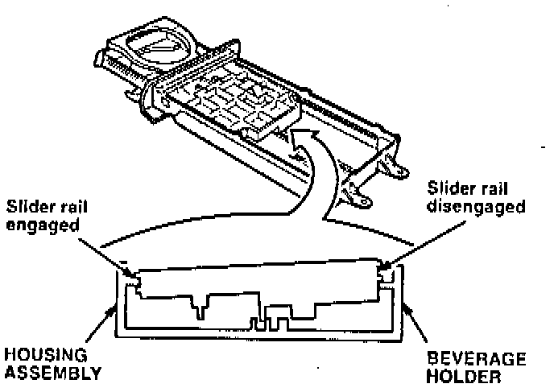
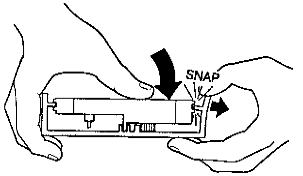
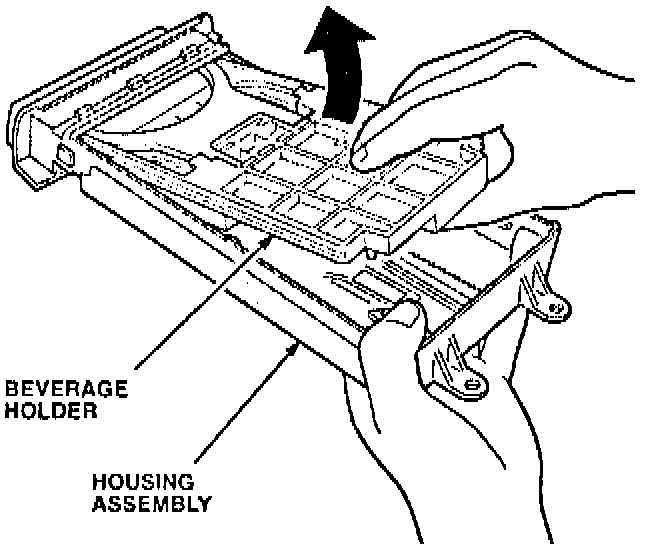
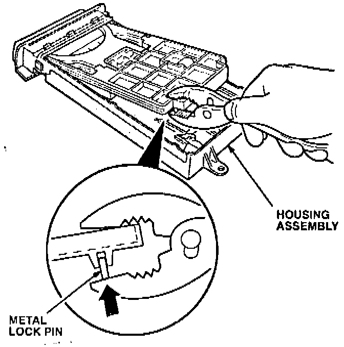
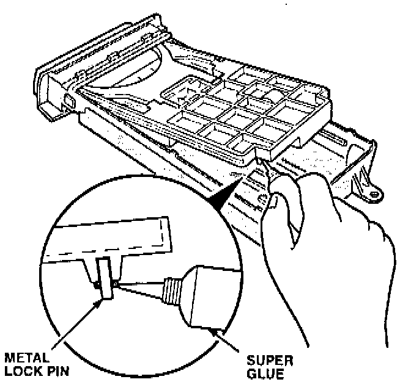
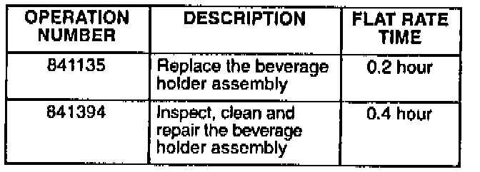

Beverage Holder - Does Not Open Or Close Properly
YEAR1992 - 94
MODEL
LEGEND
VIN APPLICATION
ALL
BULLETIN NO.
94-007
July 5, 1994
Beverage Holder Does Not Open or Close Properly
PROBLEM
The beverage holder does not open, or it will not stay latched and closed.
CORRECTIVE ACTION
Inspect the beverage holder assembly. and repair the slider rails and latch pin as needed.
1. Lift up the center console armrest pad, and remove the inner cover (six screws) and the latch magnet.

2. Remove the two screws attaching the beverage holder assembly to the center console armrest pad; then, remove the beverage holder assembly.

3. Inspect the beverage holder slider rails for breakage.
^ If the slider rails are OK, go to step 4 to continue the repair.
^ If the slider rail on either side of the beverage holder is broken, replace the beverage holder assembly with the part listed under PARTS INFORMATION to complete the repair.
4. Check the beverage holder for contamination (beverage spills, dirt, etc.).
^ If the beverage holder is clean, go to step 5.
^ If the beverage holder is contaminated, clean it with a mild soap and water solution. Do not immerse the beverage holder assembly in the soapy water; that could dilute the grease that controls the opening speed of the beverage holder.

5. Check the engagement between the beverage holder slider rails and the housing assembly slider rails.
^ If the slider rails are engaged, go to step 6.

^ If the slider rails are disengaged, first reposition the beverage holder slider rails in the housing assembly, and then go to step 7.
6. Close the beverage holder, and check the latching function.
^ If the beverage holder latches, go to step 11,
^ If the beverage holder does not latch, continue with step 7.

7. Disengage the beverage holder from both sides of the housing assembly slider rails to allow access to the metal lock pin.

8. Push on the metal pin until it is fully seated.

9. Apply a small amount of cyanoacrylate (super glue) around the base of the pin. Allow the glue to dry before reassembling.
10. Engage the beverage holder into the slider rails of the housing assembly, and check for proper operation.
11. Reinstall the beverage holder assembly.
PARTS INFORMATION
Beverage Holder Assembly: P/N 83406-SPO-AO2
WARRANTY CLAIM INFORMATION
In Warranty:
The normal warranty applies.

Out of Warranty:
Any repair performed after warranty expiration may be eligible for goodwill consideration by the District Service Manager or your Zone Office. You must request consideration, and get a decision, before starting work.
Failed P/N: 83406-SPO-A02
Defect code: 032
Contention code: B01